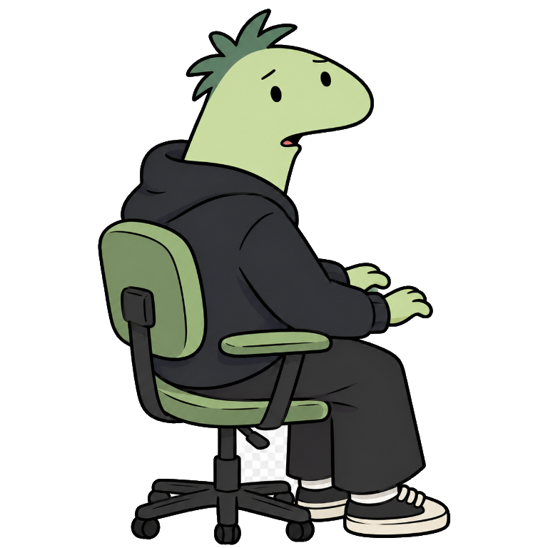

Send a photo
Open Charlie's chat and send a photo, GIF, or short video, one at a time.
01 A project for WhatsApp
Charlie-bot turns photos, GIFs, and short videos into WebP stickers ready to share. Send your media on WhatsApp; Charlie takes care of the rest.
Open the chat and send one photo at a time.

meet Charlie02 Simple by design
Open Charlie's chat and send a photo, GIF, or short video, one at a time.
Your media becomes a square WebP sticker, sized at 512 × 512.
It comes back to the chat in seconds, ready to share.
03 Behind the bot
A personal automation project exploring WhatsApp integration, media processing, and container deployment.
A linked-device connection with a persistent session.
Photos and animated media are converted into WebP stickers.
A multi-stage image, an unprivileged user, and persistent data.
Baileys is an unofficial library. The bot processes media on the server where it runs, rather than converting it locally in your browser.
Made to turn “this would make a great sticker” into reality.
Back to top